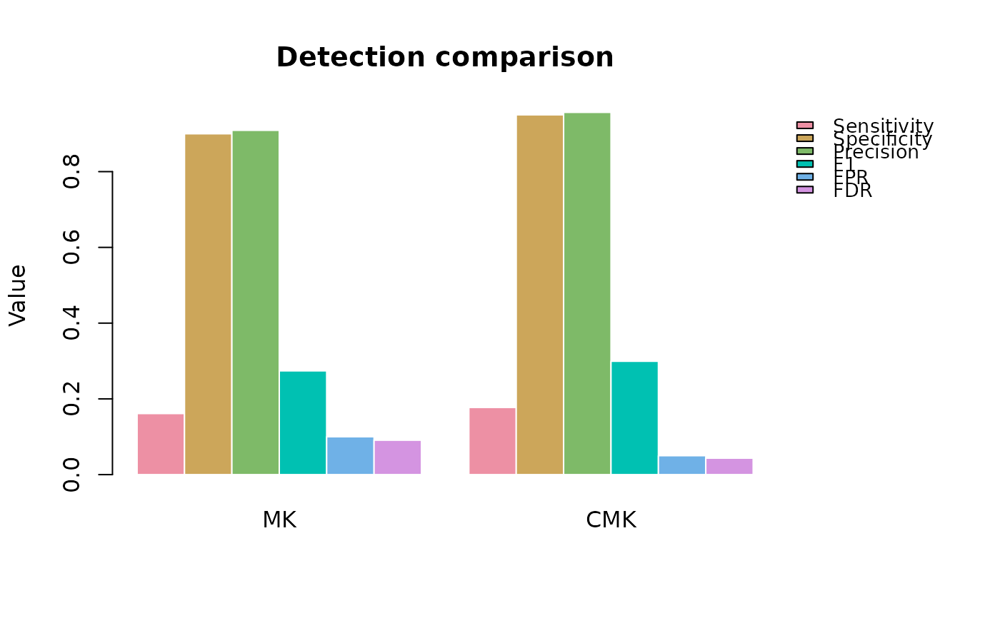

A grouped bar plot of the metric columns from a compare_detections()
result (either a single run, or the mean columns of a replicates = TRUE aggregated result), one group of bars per method.
Usage
plot_detection_comparison(
comparison,
metrics = c("Sensitivity", "Specificity", "Precision", "F1", "FPR", "FDR"),
path = NULL
)Arguments
- comparison
Output of
compare_detections(), or a data frame with the same plain (non-suffixed) metric column names – e.g. the mean-columns viewcompare_detections()'s ownreplicates = TRUEplot dispatch constructs internally.- metrics
Character vector of column names in
comparisonto plot. Default: the six proportion-based metrics fromcompare_detections()(TP/FP/TN/FNare counts on a different scale and are not plotted by default).- path
Character or
NULL. If supplied, a PNG is written there.
Details
Function type: Reporting/derived function – summarises or
plots the output of
another function; it does not compute any new statistic. Not
exported – reachable from outside the package via plot().
See also
Other validation functions:
benchmark_methods(),
benchmark_summary(),
compare_detections(),
simulation_design()
Examples
sim <- sim_trend_stack(nrow = 12, ncol = 12, n_time = 12, seed = 1)
#> >> [sim_trend_stack()] elapsed: 0.06 s
trend_mk <- trend_test(sim$series, method = "MK",
report = FALSE, verbose = FALSE)
trend_cmk <- trend_test(sim$series, method = "CMK",
report = FALSE, verbose = FALSE)
comparison <- compare_detections(
detections = list(MK = trend_mk$stats$p <= 0.05,
CMK = trend_cmk$stats$p <= 0.05),
ground_truth = sim$true_slope
)
#> >> [compare_detections()] elapsed: 0.01 s
# A grouped bar chart of the table above -- one group of bars per
# method, one bar per metric.
sptrends:::plot_detection_comparison(comparison)
